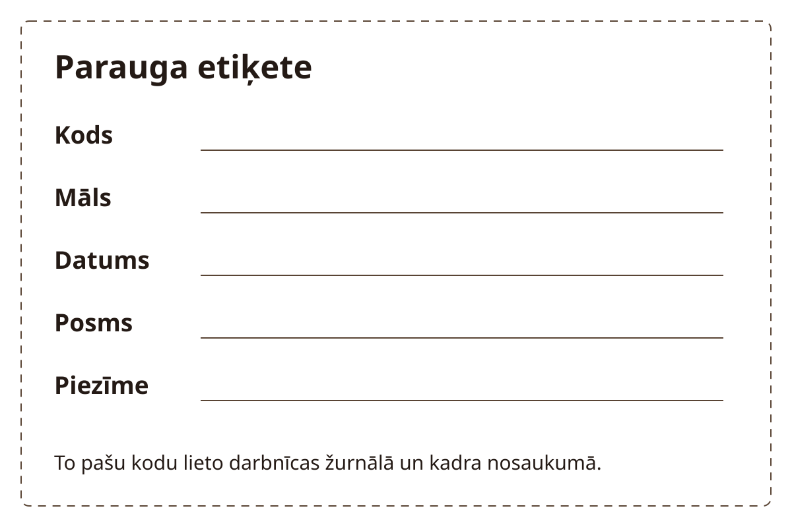

Darbnīcas labiekārtošana · Stunda 6 no 6
Paraugu, rīku un materiālu glabāšana
Sakārto nelielu glabāšanas zonu tā, lai pēc marķējuma var atrast materiālu, darba stadiju un saistīto pierakstu.
Stundas rezultāts. Marķēta plaukta karte, viena parauga ceļš starp stadijām un materiālu inventāra pieraksts.
Teksts un kadri sagatavoti izmēģinājumam. Norādītie laiki ir plānoti; darbnīcas izmēģinājums un video ieraksts vēl nav dokumentēti.
Pirms filmēšanas un prakses
Priekšzināšanas. Zināma glabājamo materiālu izcelsme un plaukta lietošanas nosacījumi.
Sāc ar vienu plauktu un dažiem rīkiem. Sagatavo māla oriģinālo marķējumu, darba etiķetes un vienu zināmu glazūras iepakojumu vai tā dokumentu. Nezināmus materiālus neidentificē pēc krāsas vai izmēģinājuma.
| Rīks vai materiāls | Kam tas vajadzīgs |
|---|---|
| Plaukts | Atbilstoši tā slodzes un nostiprināšanas norādēm. |
| Materiālu etiķetes | Izsekojama izcelsme. |
| Darbu etiķetes | Kods, datums un stadija. |
| Rīku turētājs | Noteiktas paņemšanas un atlikšanas vietas. |
| Inventāra un darbu žurnāls | Saikne starp kodu un dokumentāciju. |
| Paraugs | Sākuma stāvoklis | Izmantošana ainās |
|---|---|---|
| D01 | Viens mitrs mācību darbs | Etiķete un plaukta vieta. |
| D02 | Iepriekš sagatavots paraugs citā stadijā | Atšķirīgo stadiju marķējuma piemērs. |
| M01 | Zināms materiāls ar oriģinālu marķējumu | Inventāra rinda. |
Pārbaudi pirms ieraksta
- Etiķetes lasāmas no parastās piekļuves puses.
- Plauktā nav smagu priekšmetu, kas jāpārvieto demonstrācijas dēļ.
- D01 un D02 nav viens paraugs dažādos laikos, ja tas nav dokumentēts.
- Materiāla dati foto saistīti ar oriģinālo iepakojumu.
Drošība šajā stundā
Glazūru un citu materiālu iepakojumus turi noslēgtus, ar oriģinālu informāciju un drošības datu lapām, ja piemērojams. Tos glabā atsevišķi no pārtikas un nepieejamus bērniem. Smagumu un plauktu nostiprināšanu izvērtē pēc ražotāja norādēm. Nezināmu pulveri nelieto un neapdedzini.
Apstājies, ja: plaukts nestabils, trauks bojāts vai materiāla izcelsme nav zināma. Neatver, nepārsver un nejauc nezināmo saturu filmēšanai.

Filmēšanas secība
Ainas un ieteicamais teksts
7 ainas · 3:50
Citāti ir pielāgojams pasniedzēja teksts. Pēc runas atstāj laiku darbības vērošanai. Ja kustība aizņem ilgāk, pagarini ainu un atjauno laika plānu.
-
1. Vienas zonas uzdevums
0:00-0:20 · 20 sAinas kods: telpa-06-a01
- Kadrējums
- Plaukta sākuma foto un tukša karte.
- Darbība
- Izvēlies vienu stabilu glabāšanas zonu. Nosauc, ko tajā paredzēts novietot.
Ieteicamais runājamais teksts
Sakārtosim vienu plaukta zonu. Pēc marķējuma būs saprotams, kas šeit glabājas.
- Teksts ekrānā
- Rezultāts: plaukta karte
- Pārbaudes kadrs
- Redzama konkrēta zona, ne visa telpa abstrakti.
- Pauze un montāža
- Neradi nekārtību sākuma kadra dēļ.
-
2. Materiāla izcelsme
0:20-0:55 · 35 sAinas kods: telpa-06-a02
- Kadrējums
- M01 oriģinālais marķējums un inventāra lapa.
- Darbība
- Pieraksti nosaukumu, ražotāju un partiju, ja tā norādīta. Pievieno dokumentu atrašanās vietu.
Ieteicamais runājamais teksts
Saglabāju oriģinālo informāciju. Krāsa vai trauka izskats nevar aizstāt materiāla nosaukumu.
- Teksts ekrānā
- Nosaukums; partija; dokuments
- Pārbaudes kadrs
- Inventāra rinda sakrīt ar etiķeti.
- Pauze un montāža
- Tver tikai izmantojamo dokumenta informāciju.
-
3. Darbu stadijas
0:55-1:35 · 40 sAinas kods: telpa-06-a03
- Kadrējums
- D01 un D02 blakus ar etiķetēm.
- Darbība
- Marķē mitru darbu, apžuvušu darbu un pēc apdedzināšanas stadiju tikai pēc to faktiskā stāvokļa. Atsevišķiem paraugiem lieto atsevišķus kodus.
Ieteicamais runājamais teksts
Šiem paraugiem ir atšķirīgi kodi un stadijas. Tās pierakstu pēc faktiskā darba stāvokļa.
- Teksts ekrānā
- Kods un faktiskais posms
- Pārbaudes kadrs
- Paraugu identitāte nav sajaukta.
- Pauze un montāža
- Nesoli vienu žūšanas ilgumu visiem darbiem.
-
4. Rīku atgriešana vietā
1:35-2:10 · 35 sAinas kods: telpa-06-a04
- Kadrējums
- Skats no augšas uz turētāju.
- Darbība
- Sakārto ikdienas rīkus pēc darbības. Asajiem paredzi atsevišķu aizsargātu vietu, tīrus rīkus atliec pēc kopšanas.
Ieteicamais runājamais teksts
Rīkam jābūt viegli atrodamam un droši noliekamam. Asajiem rīkiem paredzu atsevišķu vietu.
- Teksts ekrānā
- Paņem; lieto; notīri; atliec
- Pārbaudes kadrs
- Paņemšana un atlikšana ir redzama.
- Pauze un montāža
- Kadrā neatstāj neapklātus asmeņus starp parastiem rīkiem.
-
5. Noslēgti iepakojumi
2:10-2:45 · 35 sAinas kods: telpa-06-a05
- Kadrējums
- Aizvērti marķēti trauki glabāšanas vietā.
- Darbība
- Pārbaudi vāku un marķējumu bez materiāla izbēršanas. Norādi vietu dokumentiem un nezināma materiāla izolēšanai līdz noskaidrošanai.
Ieteicamais runājamais teksts
Iepakojumus pārbaudu aizvērtus. Nezināmu materiālu darbā neizmēģinu.
- Teksts ekrānā
- Noslēgts; marķēts; identificēts
- Pārbaudes kadrs
- Trauks nav blakus pārtikai vai bērniem pieejamā vietā.
- Pauze un montāža
- Ķīmiskas vielas filmēšanai nepārber citā traukā.
-
6. Parauga atrašanas tests
2:45-3:25 · 40 sAinas kods: telpa-06-a06
- Kadrējums
- Plaukta karte, darba kods un atbilstošā žurnāla lapa.
- Darbība
- Pēc koda atrodi paraugu un tā foto vai pierakstu. Ja neatbilstība, izlabo karti, neizdomājot pazudušos datus.
Ieteicamais runājamais teksts
Pēc koda atrodu darbu un pierakstu. Ja kāda saite trūkst, to atzīmēju un noskaidroju.
- Teksts ekrānā
- Kods → vieta → pieraksts
- Pārbaudes kadrs
- Trīs vietās sakrīt viens kods.
- Pauze un montāža
- Šī ir galvenā rezultāta pārbaude.
-
7. Kas paveikts un kas paliek
3:25-3:50 · 25 sAinas kods: telpa-06-a07
- Kadrējums
- Gala plaukta foto un atvērto jautājumu saraksts.
- Darbība
- Pieraksti sakārtoto zonu un atlikušās telpas pārbaudes. Cikla noslēgumu nepārvērt par drošības sertifikātu.
Ieteicamais runājamais teksts
Tagad šajā zonā varam atrast darbus un dokumentus. Pārējie telpas jautājumi paliek savā pārbaudes sarakstā.
- Teksts ekrānā
- Saglabā karti un atvērtos jautājumus
- Pārbaudes kadrs
- Gala foto atbilst kartei.
- Pauze un montāža
- Noslēdz ar nākamās keramikas prasmes izvēli.
Ainu atzīmes saglabājas šajā pārlūkā, ja pieejama lokālā glabāšana. Tās atzīmē ieraksta progresu, nevis tehniskās drošības pārbaudi.
Prakse darbnīcā
Pamatuzdevums. Marķēta plaukta karte, viena parauga ceļš starp stadijām un materiālu inventāra pieraksts.
| Darba posms | Plānotais laiks |
|---|---|
| Vienas zonas un materiālu apskate | 10 min |
| Etiķetes un inventāra rindas | 15 min |
| Rīku un darbu vietu sakārtošana | 15 min |
| Parauga atrašanas pārbaude | 10 min |
| Foto un neatbildētie jautājumi | 10 min |
| Kopā | 60 min |
Filmēšana. Plāno 45-75 minūšu atsevišķu filmēšanas sesiju dokumentiem, telpas skatiem un atkārtojumiem. Šī aplēse vēl jāpārbauda.
Gaidīšana. Plauktu marķēšanu veic šajā sesijā. Parauga pāreju uz nākamo apstrādes stadiju ieraksta tikai pēc faktiskās darbības.
Ja paliek laiks. Palūdz otram cilvēkam pēc kartes atrast vienu rīku un viena parauga pierakstu.
Ja jāpārtrauc. Noslēdz materiālus, droši atliec rīkus un saglabā neatpazīto vienību sarakstu.
Ko darīt, ja neizdodas
| Novērotā pazīme | Iespējamais iemesls | Nākamā darbība |
|---|---|---|
| Kods atkārtojas dažādiem darbiem | Nav vienotas numurēšanas | Piešķir atšķirīgus kodus, saglabājot iepriekšējo pierakstu saikni. |
| Etiķete atdalās no darba | Marķēta tikai pārvietojama vieta | Kodu pievieno arī atbalstam un foto. |
| Nav zināms pulvera nosaukums | Pazudusi izcelsme | Noslēdz un marķē kā nezināmu, nelieto; noskaidro identificēšanu vai nodošanu. |
Drukājama darba lapa · Darbnīcas labiekārtošana 06
Paraugu, rīku un materiālu glabāšana: pieraksti
Datums: ____________________ Darba / māla kods: ____________________
Mērķis. Marķēta plaukta karte, viena parauga ceļš starp stadijām un materiālu inventāra pieraksts.
Pirms uzdevuma. Glazūru un citu materiālu iepakojumus turi noslēgtus, ar oriģinālu informāciju un drošības datu lapām, ja piemērojams. Tos glabā atsevišķi no pārtikas un nepieejamus bērniem. Smagumu un plauktu nostiprināšanu izvērtē pēc ražotāja norādēm. Nezināmu pulveri nelieto un neapdedzini.
| Mēģinājums / pārbaude | Novērojums / dati | Kas vēl jānoskaidro | Nākamā darbība |
|---|---|---|---|
| 1. pārbaude | |||
| 2. pārbaude | |||
| 3. pārbaude |
Ko pierakstīt darbnīcas žurnālā
- Plaukta karte un datums.
- Paraugu kodi un faktiskās stadijas.
- Materiāla izcelsme un dokumentu vieta.
- Kuriem darbiem vai traukiem informācija vēl trūkst.
Viena nākamā izmaiņa:
Faktiskais darba laiks un pieredzes līmenis:
Pārbaudītais rezultāts un neatbildētie jautājumi:
Palīgmateriāli šai stundai

Izmēģinājuma un montāžas pieraksts
Scenārija redakcija: Praktiskais izmēģinājums: vēl nav dokumentēts. Aizpildi tabulu pēc faktiskā mēģinājuma un labo ainu laikus.
| Ainas kods / dublis | Izmantojamais fragments | Kas jāprecizē |
|---|---|---|
| telpa-06-a___ | ________________ | ________________ |
| telpa-06-a___ | ________________ | ________________ |